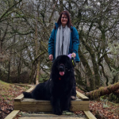
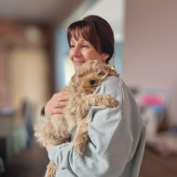
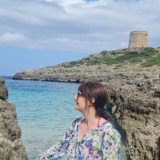

<!DOCTYPE html>
<html lang="en">
  <head>
    <meta charset="UTF-8" />
    <link rel="icon" type="image/svg+xml" href="favicon.svg" />
    <meta name="viewport" content="width=device-width, initial-scale=1.0" />
    <title>About Me - Welcome To My World </title>
    <meta name="description" content="Learn more about me and my journey to starting Thoughtful Minds Therapy. Discover my approach and commitment to helping you achieve mental wellness.">
    <link rel="preconnect" href="https://fonts.googleapis.com" />
    <link rel="preconnect" href="https://fonts.gstatic.com" crossorigin />
    <link
      href="https://fonts.googleapis.com/css2?family=Grandstander:ital,wght@0,100..900;1,100..900&family=Noto+Sans:ital,wght@0,100..900;1,100..900&display=swap"
      rel="stylesheet"
    />
    <link rel="stylesheet" href="style.css" />
     <link rel="stylesheet" href="media.css" />
    <link rel="stylesheet" href="Footer.css" />
    <link
      rel="stylesheet"
      href="https://cdnjs.cloudflare.com/ajax/libs/font-awesome/6.5.1/css/all.min.css"
      integrity="sha512-DTOQO9RWCH3ppGqcWaEA1BIZOC6xxalwEsw9c2QQeAIftl+Vegovlnee1c9QX4TctnWMn13TZye+giMm8e2LwA=="
      crossorigin="anonymous"
      referrerpolicy="no-referrer"
    />
  </head>
</html>

 <body class="body">
    <header class="primary-header" data-overlay="false">
      <div class="container">
        <div class="nav-wrapper">
          <a href="index.html">
            
          </a>

          <button class="mobile-nav-toggle" aria-controls="primary-navigation" aria-expanded="false">
            <i class="fas fa-bars icon-open"></i>
            <i class="fas fa-times icon-close"></i>
          </button>

          <nav class="primary-navigation" id="primary-navigation" data-visible="false">
    <ul aria-label="Primary" role="list" class="nav-list">
        <li><a href="AboutMe.html">About Me</a></li>
        <li class="services-li">
            <a href="Services.html">Services</a>
            <ul class="service-drop-down">
                <li><a href="Walking&Talking.html">Walking & Talking</a></li>
                <li><a href="Counselling.html">Counselling</a></li>
                <li><a href="ADHDCoaching.html">Neurodivergent Coaching</a></li>
                <li><a href="WellnessCoaching.html">Wellness Coaching</a></li>
            </ul>
        </li>
        <li><a href="ContactMe.html">Contact Me</a></li>
    </ul>
</nav>
        </div>
      </div>
    </header>

    <script src="Main.js"></script>
  </body>

  <main>
    <section>
      <div class="TitleHeading">
        <h1 class="ff-heading">ABOUT ME</h1>
      </div>
    </section>
  </main>

  <div id="Aboutme">
    <div class="scallop">
      
      <p class="ff-body">
        
I believe in a holistic approach to therapy, all parts of us affect our whole being! Wellness and recovery happen when we take into consideration all these parts, if we disregard any part we cannot be fully well. I strive to support you on your journey to wellness in a way that is best suited to you.

      </p>
    </div>

<section class="aboutme-content">
  <div class="TitleHeading">
    <h1 class="ff-heading">MY JOURNEY</h1>
  </div>
  <div class="journey">
    <h2 class="ff-subheading">My Family</h2>
    <div class="journey-content row p-right">
      <p class="ff-body">
        A little about myself, I am married with 3 grown humans who have all left home. We have a Newfoundland and are grandparents to a Cavapoo. I have a crazy large extended family, with many family members being neurodivergent. I love getting outside, walking, enjoying the countryside, going to the theatre, having adventures, good food, going to the gym and generally challenging myself. 
I also share caring responsibilities for my mother-in-law who suffers from dementia and lives in her own little home in our garden.

      </p>
      
    </div>
  </div>
</section>

<section class="aboutme-content">
  <div class="journey">
    <h2 class="ff-subheading">My Therapy</h2>
    <div class="journey-content row-reverse p-left">
      
      <p class="ff-body">
     I offer a variety of ways to manage your emotions and support the changes you may want to make, we can talk, we can look at strategies to support emotions and bring about change, we can work in a somatic way to connect the mind, body and soul…after all we are one, we can walk and talk if being outdoors is your thing, we can work online, we can use gentle interventions such as Drawing and Talking and we can work in coaching format to support any needs you have.
      </p>
    </div>
  </div>
</section>

    <section class="aboutme-content">
  <div class="journey">
    <h2 class="ff-subheading">My Background</h2>
      <p class="ff-body">
 I have been working in a therapeutic manner for over five years with three years of training before that, before my training and during I worked with children and young people in a variety of settings, including as a SEN TA, pastoral lead in a specialist behavioural school, tutoring in a children’s home and volunteering in Girl Guiding. 
Since qualifying I have worked in a variety of settings as a counsellor including a primary school, high school and specialist behavioural school alongside my private practice. I now volunteer at Air Cadets as their training and wellbeing officer.

      </p>
    </div>
  </div>
</section>


    <footer>
      <div class="footerContainer">
        <div class="socialIcons">
          <a href=""><i class="fa-brands fa-facebook"></i></a>
          <a href=""><i class="fa-brands fa-instagram"></i></a>
          <a href=""><i class="fa-brands fa-google-plus"></i></a>
        </div>
        <div class="footerNav">
          <ul>
            <li><a href="index.html">Home</a></li>
            <li><a href="AboutMe.html">About</a></li>
            <li><a href="ContactMe.html">Contact Us</a></li>
            <li><a href="Services.html">Services</a></li>
          </ul>
        </div>
      </div>
      <div class="footerBottom">
        <p>
          Copyright &copy;2024; Designed by
          <span class="designer">A.Longson</span>
        </p>
      </div>
    </footer>
  </div>
</body>
